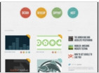

CSS清除浮动大全共8种方法
作者：佚名 字体：[增加 减小] 来源：互联网 时间：06-04 16:19:27 我要评论
在各种浏览器中显示效果也有可能不相同，这样让清除浮动更难了，下面总结8种清除浮动的方法，测试已通过 ie chrome firefox opera，需要的朋友可以参考下
微信加人软件
手机定位追踪软件
id解锁
定位精确找人
在线客服
捕鱼赚钱
网站代理免费加盟
清除浮动是每一个 web前台设计师必须掌握的机能。css清除浮动大全，共8种方法.
浮动会使当前标签产生向上浮的效果，同时会影响到前后标签、父级标签的位置及 width height 属性。而且同样的代码，在各种浏览器中显示效果也有可能不相同，这样让清除浮动更难了。解决浮动引起的问题有多种方法，但有些方法在浏览器兼容性方面还有问题。
下面总结8种清除浮动的方法（测试已通过 ie chrome firefox opera，后面三种方法只做了解就可以了）：
1，父级div定义 height
浮动会使当前标签产生向上浮的效果，同时会影响到前后标签、父级标签的位置及 width height 属性。而且同样的代码，在各种浏览器中显示效果也有可能不相同，这样让清除浮动更难了。解决浮动引起的问题有多种方法，但有些方法在浏览器兼容性方面还有问题。
下面总结8种清除浮动的方法（测试已通过 ie chrome firefox opera，后面三种方法只做了解就可以了）：
1，父级div定义 height
代码如下:显示代码
原理：父级div手动定义height，就解决了父级div无法自动获取到高度的问题。
优点：简单、代码少、容易掌握
缺点：只适合高度固定的布局，要给出精确的高度，如果高度和父级div不一样时，会产生问题
建议：不推荐使用，只建议高度固定的布局时使用
2，结尾处加空div标签 clear:both
优点：简单、代码少、容易掌握
缺点：只适合高度固定的布局，要给出精确的高度，如果高度和父级div不一样时，会产生问题
建议：不推荐使用，只建议高度固定的布局时使用
2，结尾处加空div标签 clear:both
代码如下:显示代码
原理：添加一个空div，利用css提高的clear:both清除浮动，让父级div能自动获取到高度
优点：简单、代码少、浏览器支持好、不容易出现怪问题
缺点：不少初学者不理解原理；如果页面浮动布局多，就要增加很多空div，让人感觉很不好
建议：不推荐使用，但此方法是以前主要使用的一种清除浮动方法
3，父级div定义 伪类:after 和 zoom
优点：简单、代码少、浏览器支持好、不容易出现怪问题
缺点：不少初学者不理解原理；如果页面浮动布局多，就要增加很多空div，让人感觉很不好
建议：不推荐使用，但此方法是以前主要使用的一种清除浮动方法
3，父级div定义 伪类:after 和 zoom
代码如下:显示代码
原理：IE8以上和非IE浏览器才支持:after，原理和方法2有点类似，zoom(IE转有属性)可解决ie6,ie7浮动问题
优点：浏览器支持好、不容易出现怪问题（目前：大型网站都有使用，如：腾迅，网易，新浪等等）
缺点：代码多、不少初学者不理解原理，要两句代码结合使用才能让主流浏览器都支持。
建议：推荐使用，建议定义公共类，以减少CSS代码。
4，父级div定义 overflow:hidden
优点：浏览器支持好、不容易出现怪问题（目前：大型网站都有使用，如：腾迅，网易，新浪等等）
缺点：代码多、不少初学者不理解原理，要两句代码结合使用才能让主流浏览器都支持。
建议：推荐使用，建议定义公共类，以减少CSS代码。
4，父级div定义 overflow:hidden
代码如下:显示代码
原理：必须定义width或zoom:1，同时不能定义height，使用overflow:hidden时，浏览器会自动检查浮动区域的高度
优点：简单、代码少、浏览器支持好
缺点：不能和position配合使用，因为超出的尺寸的会被隐藏。
建议：只推荐没有使用position或对overflow:hidden理解比较深的朋友使用。
5，父级div定义 overflow:auto
优点：简单、代码少、浏览器支持好
缺点：不能和position配合使用，因为超出的尺寸的会被隐藏。
建议：只推荐没有使用position或对overflow:hidden理解比较深的朋友使用。
5，父级div定义 overflow:auto
代码如下:显示代码
原理：必须定义width或zoom:1，同时不能定义height，使用overflow:auto时，浏览器会自动检查浮动区域的高度
优点：简单、代码少、浏览器支持好
缺点：内部宽高超过父级div时，会出现滚动条。
建议：不推荐使用，如果你需要出现滚动条或者确保你的代码不会出现滚动条就使用吧。
6，父级div 也一起浮动
优点：简单、代码少、浏览器支持好
缺点：内部宽高超过父级div时，会出现滚动条。
建议：不推荐使用，如果你需要出现滚动条或者确保你的代码不会出现滚动条就使用吧。
6，父级div 也一起浮动
代码如下:显示代码
原理：所有代码一起浮动，就变成了一个整体
优点：没有优点
缺点：会产生新的浮动问题。
建议：不推荐使用，只作了解。
7，父级div定义 display:table
优点：没有优点
缺点：会产生新的浮动问题。
建议：不推荐使用，只作了解。
7，父级div定义 display:table
代码如下:显示代码
原理：将div属性变成表格
优点：没有优点
缺点：会产生新的未知问题。
建议：不推荐使用，只作了解。
8，结尾处加 br标签 clear:both
优点：没有优点
缺点：会产生新的未知问题。
建议：不推荐使用，只作了解。
8，结尾处加 br标签 clear:both
代码如下:显示代码
html5网页模版
网页设计模版

网站制作模版
响应式网站设计
个人网站制作

网站制作
网站制作
评论 （0人参与，0人评论）

微博登录
QQ登录
手机登录